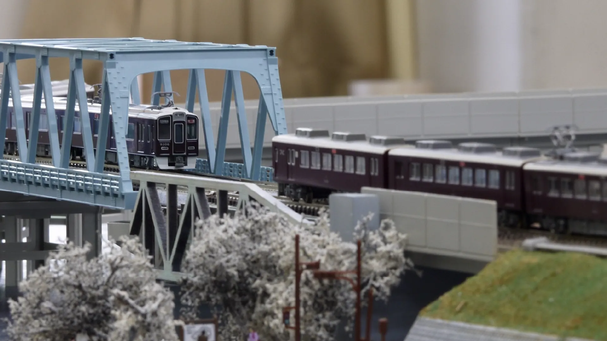
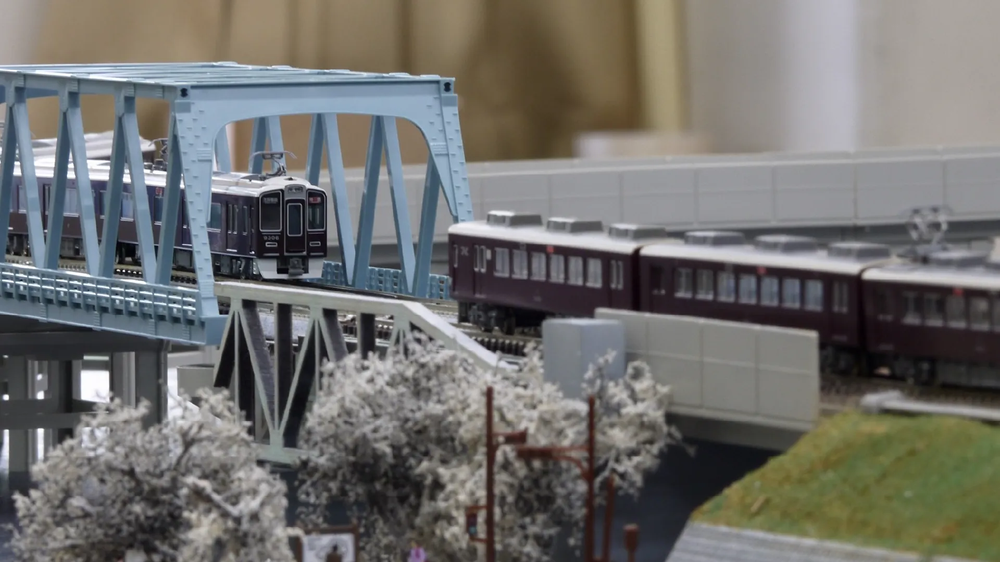

【迷ってる人必見】菁々祭どこ巡る？体験型展示のすゝめ
2023.06.05
PRパート員 S.K. & H.K.
菁々祭には､見るだけでなく普段の活動を体験できる｢体験型展示｣があるのをご存じでしょうか｡この記事では､体験型展示を行っている団体へインタビューを行い､展示内容や去年の様子などを教えてもらいました｡また､部員の皆さんの入部動機や､部活の魅力などについても教えてもらいました｡
鉄道研究部
筆者も去年体験に行きました｡本格的な鉄道模型を見ることのできる貴重な機会だと思います｡オタク感が満載の部誌も必読です！
展示教室は1Eの予定です｡
鉄研公式Twitter(@tdj_tekken)
Q.入部動機と､部活の魅力を教えてください｡
昔から鉄道好きだったので､鉄研に入りました｡ 友人関係がすごく良好で､普段は友達と雑談しています｡ 時々みんなと鉄道旅行に行けるのが魅力です｡
Q.展示内容と､こだわりを教えてください｡
Ｎゲージの鉄道模型の運転体験をしています｡ 少しでも鉄道に興味を持ってもらえるとうれしいです｡
去年の様子
㊗️ 開 場 ㊗️
— 東大寺学園鉄道研究部 (@tdj_tekken) September 10, 2022
🆗🆗🆗🆗🆗🆗🆗🆗🆗🆗🆗🆗🆗
鉄研鉄研鉄研鉄研鉄研鉄研鉄研鉄研鉄研鉄研鉄研鉄研鉄研鉄研鉄研鉄研鉄研鉄研鉄研鉄研鉄研鉄研鉄研鉄研鉄研1E1E1E1E1E1E1E1E1E1E1E1E1E1E1E1E1E1E1E1E pic.twitter.com/ylrAMqh96p
Q.去年の混み具合を教えてください｡
とても混むので､模型の運転体験をしたい人には整理券を配布しています｡ すぐに配りきってしまうので､早めに来てもらった方がいいと思います｡
Q.去年から変える予定のことがあれば､教えてください｡
新たに巨大な車庫モジュールを展示する予定です｡
Q.参加者の皆さんに､ひとことお願いします｡
顔だけでも出してみてください｡きっと楽しいと思います！
クイズ研究部
筆者も体験に行って､早押しに挑戦しました｡自分が押して”ピコーン”と鳴ったときの爽快感がたまらないです｡
展示教室は5Eの予定です｡
クイ研公式Twitter(@TDJquiz)
Q.入部動機と､部活の魅力を教えてください｡
東大寺のクイ研の話を前から聞いていて､文化祭で体験をしたとき楽しかったので入部しました｡ クイズの対策を通して､自分の知識がだんだんと増えていくのが魅力の1つです｡
Q.展示内容と､こだわりを教えてください｡
ペーパークイズと､早押しクイズの体験を行っています｡ ペーパーは､部員が数問ずつ作った､自作の問題を載せています｡ 早押しは､初心者や小学生でも押しやすいような難易度のものを行っています｡
去年の様子
#58seisei
— 東大寺学園クイズ研究部 (@TDJquiz) September 11, 2022
本日も早押し体験とペーパークイズを行っており、大盛況となっております。
是非お越しください！！ pic.twitter.com/zaRc7yXiF3
Q.去年の混み具合を教えてください｡
時間帯によります｡激混みのこともあれば､空席があることもあります｡ 混んでいるときは､早押し体験は時間制で交代してもらっています｡
Q.去年から変える予定のことがあれば､教えてください｡
去年実施した四択クイズ大会は実施しない予定です｡
Q.参加者の皆さんに､ひとことお願いします｡
少しでもクイズに興味があるならぜひ来て欲しいし､興味がなくても一度来てみれば面白さが分かって絶対楽しめると思うので､みなさん覗いてみてください！
VOCALOID&作曲同好会
去年設立された同好会です｡時代を感じますね｡
展示教室は2Dの予定です｡
TVOC公式Twitter(@TDJ_TVOC)
TVOC公式HP
Q.入部動機と､部活の魅力を教えてください｡
ボカロ･作曲好きが集まって､去年設立しました｡ 自由な創作活動が出来るのが魅力です｡
Q.展示内容と､こだわりを教えてください｡
自作曲の発表と､本格的なボカロクイズの実施など､各種展示を行います｡ 去年好評だった､参加者の皆さんに黒板にメッセージを残してもらう企画を､今年も行います｡ また､DTM体験も行います｡PCを使って実際のボカロ曲の製作環境が体験できます｡ 初心者でも出来るように機材を準備していますので､ぜひお越し下さい！
去年の様子
2日間、お疲れ様でした！！
— TVOC/東大寺学園VOCALOID&作曲同好会 (@TDJ_TVOC) September 11, 2022
TVOC1st、撤収完了しました。
TVOCの壁、塗り絵コーナー。本当に凄い絵が多く、こちらでも感動の声があがっておりました。
会誌QRも、2日間で計120部配布しましたが、最終的には品切れとなりました。
ご来場頂いた皆様、本当にありがとうございました！！！！ pic.twitter.com/59Exc0NKdL
Q.去年の混み具合を教えてください｡
時間帯によります｡来てもらったら､基本的にすぐ体験していただけると思います｡
Q.去年から変える予定のことがあれば､教えてください｡
去年と比べて､かなり大型の展示となります｡新しい企画や展示もたくさんする予定です｡
Q.参加者の皆さんに､ひとことお願いします｡
少しでも気になったらぜひお立ち寄りください｡ ボカロ好き集まれ！
ポケモン同好会
筆者は､体験展示で､ポケモンカードをというものに初めて触れました｡
展示教室は4Dの予定です｡
Q.入部動機と､部活の魅力を教えてください｡
ポケモンが好きだったからです｡
Q.展示内容と､こだわりを教えてください｡
ポケカで遊べるようにしています｡デッキの貸し出しも行っています｡ また､自作｢ポケモン検定｣を配布しています｡上級と超級があります｡超級はマジで難しいです｡ ポケモンのフィギュアも展示しています｡
Q.去年の混み具合を教えてください｡
受験予定の小学生や､その兄弟などに人気です｡ 台は少なくとも1つは空いていることが多いです｡
Q.去年から変える予定のことがあれば､教えてください｡
新たにポケモンの像を作り設置する予定です｡ また､ポケカの台を増やすので､より多くの人に楽しんでいただけると思います｡
Q.参加者の皆さんに､ひとことお願いします｡
デッキの貸し出しや､検定もやっています｡ ポケモンに興味のある人はぜひ来てください！
MGA(テーブルゲーム)同好会
去年筆者が友達と体験に行ったときは､夢中になって1時間ほど遊んでいました｡
展示教室は4Bの予定です｡
MGA公式Twitter (@tdj_mgadoukou)
Q.入部動機と､部活の魅力を教えてください｡
小5の時に行った文化祭で展示を見て､興味を持って入部しました｡ テーブルゲームは､お金がかかり､かつ人数がいないと遊べないものが多いですが､同好会なので会費でゲームを購入でき､また人数を容易に集めることが出来るところが魅力だと思います｡
Q.展示内容と､こだわりを教えてください｡
自作ボードゲームを展示し､遊んでもらっています｡楽しんでもらえると思います｡ TRPGのリプレイ誌に加えて､部活とは関係ない会員の趣味についての部誌の配布も行っています｡
Q.去年の混み具合を教えてください｡
ほとんど満席で､空いてもすぐに埋まります｡
Q.去年から変える予定のことがあれば､教えてください｡
新作のボドゲや､昨年のボドゲのリニューアル版なども展示する予定です｡
Q.参加者の皆さんに､ひとことお願いします｡
見るだけでなく､遊べる楽しみがあると思います｡ テーブルゲーム好き必見！
オセロ同好会
筆者も､体験に行き､遊びました｡友達にボロ負けしました｡
展示教室は3Eの予定です｡
Q.入部動機と､部活の魅力を教えてください｡
ボードゲームの中でも､特にオセロが好きだったので入りました｡ 単にオセロをするだけでなく､特殊ルールを作って遊んだりしています｡ 部誌にも色々書いてあるので､読んでみてください｡
Q.展示内容と､こだわりを教えてください｡
オセロを置いて､遊んでもらえるようにしています｡ 加えて､オセロ中盤における戦略や､｢詰めオセロ｣についての手書き記事を展示する予定です｡
Q.去年の混み具合を教えてください｡
案外人がいます｡手軽に遊べるので､暇つぶしに来ていた人が多かったです｡
Q.去年から変える予定のことがあれば､教えてください｡
特にないです｡
Q.参加者の皆さんに､ひとことお願いします｡
気軽に見に来て下さい！
囲碁将棋部
筆者は将棋がちっとも分からないので､体験はしませんでしたが､展示は楽しむことができました｡
展示教室は2Eの予定です｡
Q.入部動機と､部活の魅力を教えてください｡
小学校の時から将棋をしていたので､入部しました｡ オンラインでの練習に加えて､部員同士で対戦しています｡ 初心者から全国大会優勝レベルまで､誰でも楽しむことが出来ます｡
Q.展示内容と､こだわりを教えてください｡
将棋盤をおいて､遊んでもらえるようにします｡ 気軽に遊びに来てください｡
Q.去年の混み具合を教えてください｡
結構人がいます｡来てもらったら遊べる状態になっていると思います｡
Q.去年から変える予定のことがあれば､教えてください｡
特にないです｡
Q.参加者の皆さんに､ひとことお願いします｡
将棋の好きな人なら､誰でも楽しめると思います｡ ぜひ来てください！
最後に
今回､インタビューが出来た7団体のみ紹介しましたが､菁々祭には他にもチェス研究会･電子工作部･情報同好会などたくさんの魅力的な体験型展示があります｡
東大寺生による渾身の展示が勢揃いです｡ぜひたくさんの展示を巡ってみてください！